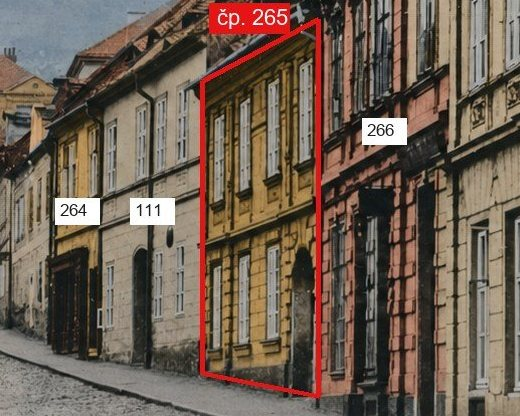
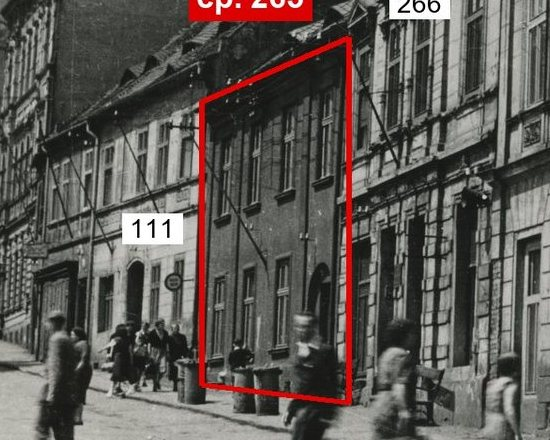
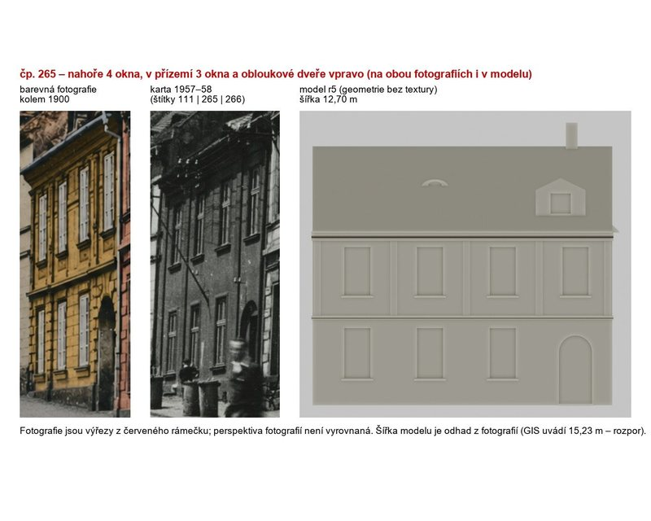
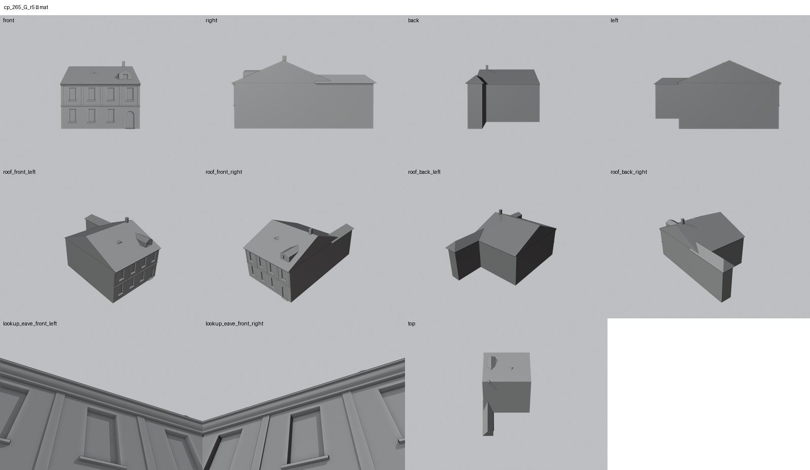

Identita domu
Dvoupodlažní dům mezi Lutherhausem (111) a zdobeným třípodlažním 266. Na barevné fotografii z doby kolem roku 1900 je žlutý, třetí zprava; na kartě z let 1957–58 je tmavý a stojí pod rukou psaným štítkem 265. Na obou snímcích má nahoře čtyři okna, v přízemí tři okna a vpravo obloukové dveře. Model r5 má tyto čtyři osy. Šířku 12,70 m jsme odhadli z obou fotografií; GIS uvádí 15,23 m, rozpor je popsán v Rozporech.
Použité prameny: barevná fotografie řady kolem roku 1900 (cp_111,154,265,266,267_001_col), karta 1957–58 se štítky 111 | 265 | 266 | 267 (cp_111,265,266,267_001), GIS půdorys id 12 pro hloubku a zadní křídlo.
Kde je dům na fotografiích
Dům je na obou snímcích v červeném rámečku, sousedé jsou popsáni čísly, takže není nutné nic počítat. Na obou fotografiích má nahoře čtyři okna, v přízemí tři okna a vpravo obloukové dveře. Texturovaná studie Codexu z 19. 10. 2026 stojí na této čtyřosé geometrii r5; přepnete ji v horním náhledu volbou Texturovaný model.






Přílohy v databázi (5)
Všechny přílohy struktury 265 v databázi Libuše, načtené 18. 10. 2026 a otevřené. Kliknutím otevřete větší náhled.

fotografie
SHA-256 0ebdc835a90e…

pohlednice
SHA-256 b8adcb802c28…

pohlednice
SHA-256 211003d6e8aa…

archivní karta
SHA-256 2bd813fa16fa…

odvozenina (kolorovaná / FRONT)
SHA-256 050253bb34ef…
Geometrie
| Revize geometrie | r5 |
|---|---|
| Poloha | GIS půdorys id 12 (ulice Kulová) |
| Šířka průčelí | 12,70 m |
| Výška okapu | 7,35 m (odhad) |
| Podlaží | 2 |
| Střecha podle pramenů | sedlová se štítovým vikýřem vpravo a malým větracím okénkem vlevo (podle fotografie střechy a studie Codexu G5) |
| Otvory / vikýře | 10 / 2 |
| Polygonů | 331 |
| Kontrola podkroví (19. 10. 2026) | prošla: vlasové zásahy do podkroví 1 ze 103 680 paprsků ze 120 pohledů; nekryté zdivo 0,00 m², střecha nad prázdnem 0,00 m² |
Kontrolní pohledy

Textury
Codex: samostatná texturovaná pracovní studie
Hotový pracovní model lze přepnout v horním náhledu. Otevřít samostatnou texturovanou studii čp. 265. Původní geometrický model níže zůstává dostupný beze změny.
Hypotézy
Vše níže je model_hypothesis, provisional, locked: false.
- eave 7.35 m and all heights are photo ratios, not measured
- width 12.70 m and axis spacing 3.08 m are photo-fit estimates (range 11-13.3 m), GIS front 15.23 m conflicts and needs a decision
- neighbours 111 (13.30 m) and 266 (11.85 m) widened in the r14 layout proposal only
- dormer (2.1 m wide gable box) and eyebrow vent positions mapped from Codex G5; roof damage holes of G5 not modelled (undated state)
- one chimney 1 m above the ridge replaces the two 16 m stacks of r4
- pilaster strips 0.30 m wide on the upper floor; ground-floor rustication left to the texture
- rear L wing from GIS (narrowed to the new party wall), roof hypothesis
Soubory
- Geometrie čp. 265, GLB
- Pracovní model: F:\MOST\output\kulova_eave_fix_claude_2026-10-19\houses\cp265\r5\cp_265_G_r5.blend
- Plán modelu: F:\MOST\output\kulova_eave_fix_claude_2026-10-19\houses\cp265\geometry_plan.json